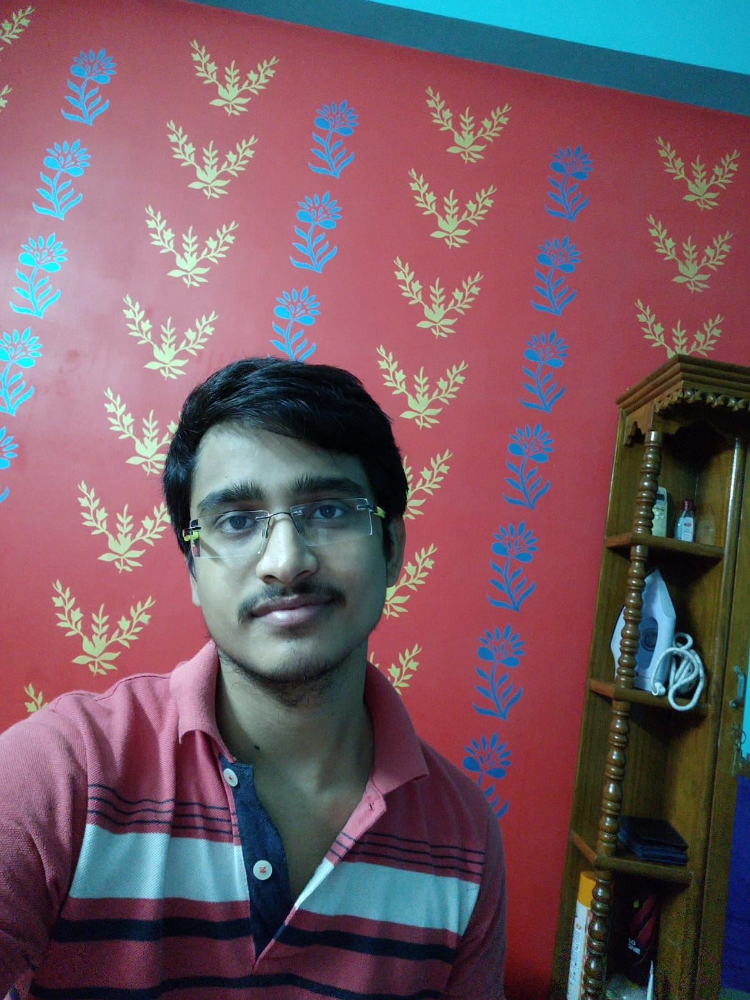

My name is Ravikant Tiwari. Currently I am pursuing my B.tech in Indian Institute of Information Technology,
Kalyani.
I am a passionate developer and interested in both app and web development.I use flutter to build apps which
run on every platform.
I am mostly inclined towards front end development when it comes to web development.I aspire to become a
software development engineer.
I prefer to write code in C++ and have fair knowledge of Java and Python. I regularly practice at GFG
online practice portal and my institute rank is 7
on the same.I have experience of competitive coding as well and has
participated in many contests
which are
conducted regularly on Codechef and Codeforces.